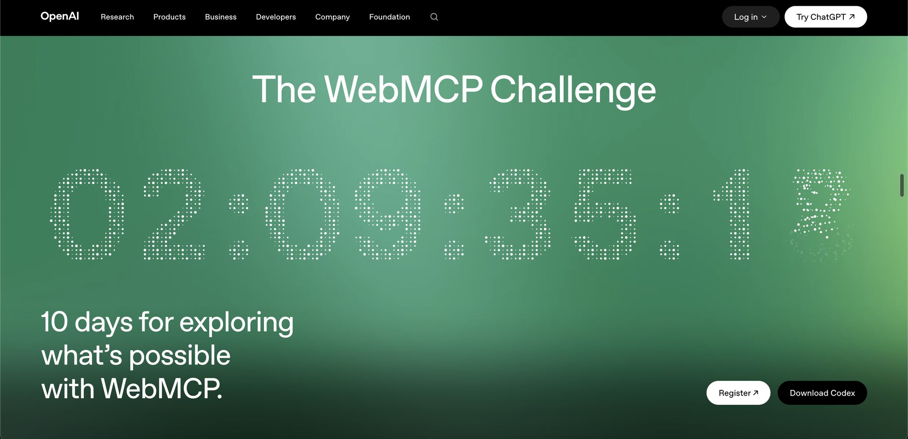

הידעתם שמתקיימת ממש עכשיו תחרות WebMCP של OpenAI?
פורסם במקור ב LinkedIn
הידעתם שמתקיימת ממש עכשיו תחרות WebMCP של OpenAI?
מדובר בתקן חדש שמאפשר לאתרים לחשוף לסוכני AI פעולות מובנות (עם MCP כמובן).
במקום שהסוכן ינסה להבין איפה ללחוץ במסך - האתר אומר לו בדיוק מה הוא יודע לעשות ואיך.
אבל אם אתם חושבים להשתתף, כדאי לדעת שסיכויי הזכייה נמוכים. כבר נרשמו יותר מ־5,200 משתתפים, ויש כבר כמה פרויקטים מלוטשים כבר באוויר.
בינינו, הפרס הוא לא בהכרח הסיבה להשתתף. זאת הזדמנות לבנות פרויקט ציבורי שמחבר את העבודה שלכם לתקן שמקודם על ידי OpenAI ו־Chrome.
הנה כמה דוגמאות חזקות שכבר הוגשו, כדי לסבר את האוזן ולהבין במה מדובר ואיך אפשר להשתמש בפועל ביכולת הזאת:
- MCPencil מאפשר לאדם ולסוכן לשחק יחד משחק ניחוש ציור אחד מצייר והשני מנחש מה זה:
https://lnkd.in/dH745DpE
- The Coop הוא משחק שבו אדם וסוכן פותרים יחד חידות:
https://lnkd.in/d8mrfv2K
- VT מאפשר לסוכן להציע שינויי קוד, כשהאדם בודק ומאשר אותם:
https://lnkd.in/deYx8rX7
הפרויקטים האלה חזקים יותר מעוד חיפוש או מילוי טופס. WebMCP אינו תוספת צדדית בהם. הוא חלק מרכזי בחוויה.
קחו בחשבון שההגשה נסגרת ב־3 בספטמבר אז לא נשאר הרבה זמן להשתתפות בתחרות. אבל עצם זה שהביקוש כזה גדול מסמן את המשך הדרך של אימוץ הפרוטוקול. שיטה מעולה של open ai להטמיע סטנדרט
אתר התחרות:
https://lnkd.in/dXAiAx64
